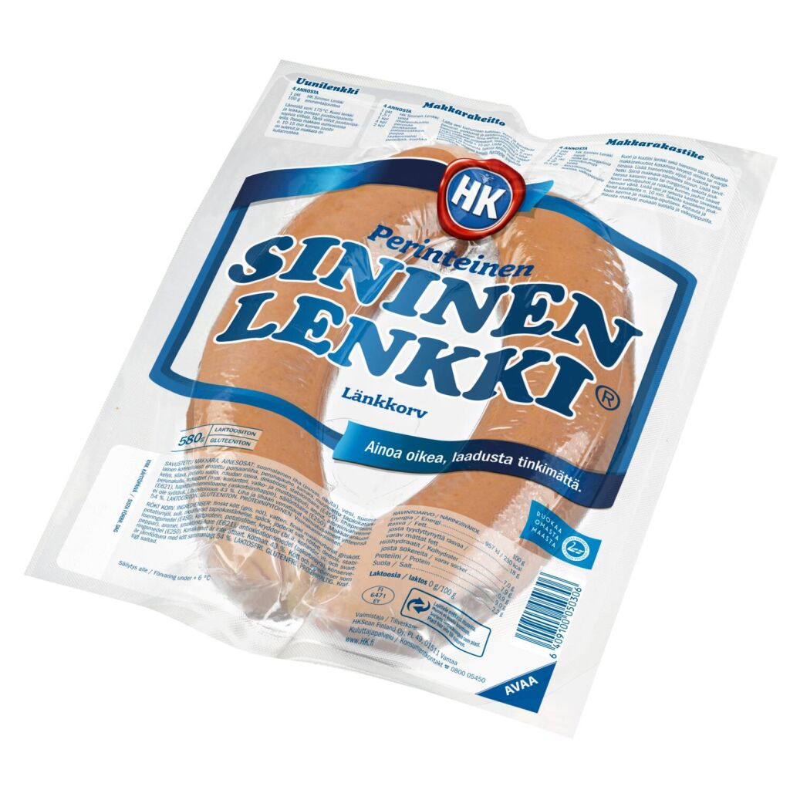

Sininen

Poor man food for whole family. You only need oven pan, knife and hot oven.
Ingredients
- Hk sininen, but if you can't buy it use cheapest sausages what you get.(Look picture above.)
- Some cheese
- Ketchup
- Mustard
Steps
- Put the sausages in an ovenproof dish and make a longitudinal incision in them
- Add plenty of ketchup and mustard to the incisions
- Add cheese above sausages
- Put in to hot oven. (~200c) and let it be there 20 min.
- Enjoy with bottle of beer.
Back